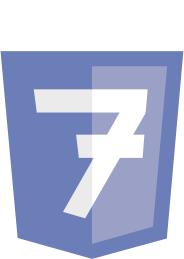

Skills
I am continuously learning, as all Developers should, reading documentation and staying up to date with new releases and technologies.
My primary goal is to perform as a Full-Stack engineer. I'm enthusiastic about learning new languages, frameworks and libraries.
Skill Levels

CSS
Node JS
Git

Java
Bash / Linux

SQL

PHP
Agile Work Flow
DisclaimerI'm reluctant to proclaim 100% knowledge of any skill although I feel I can handle most reasonable challenges in it primarily because a developer never finishes knowing a subject, there will always be modifications, new releases and new frameworks that evolve the environment.
Road Map
I would love to learn all the languages, but for the sake of organizing my progress here is a detailed exposition of my learning road map for the next year (this is an estimation and can vary according to challenges that may arise demanding urgent libraries/frameworks/languages to be learnt)
APIs and Testing June-2022 Mocha framework and advanced testing
Web Apps and React July-2022 JSX, Component Interaction and Jest testing
Redux and Express.js August-2022 Async, Middleware, Backend and Testing with TDD
Advanced PostgreSQL October-2022 Node and Express implementation, SQL, Query Builders and ORMs
API Development with Swagger and OpenAPI November-2022 Development, design, documentation and front/back connections
Deploying Web Apps and Internet Security December-2022 Deploying a PERN App with Heroku, Web and Data Security